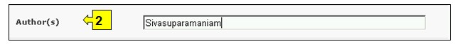

URL: http://bch.cbd.int/database/bibliographic-references/
L’Article 20 du Protocole crée le CEPRB afin de faciliter l'échange d'information et d'expériences relatives aux OVMs parmi les Parties dans le but de les aider à appliquer le Protocole. Pour aider dans l’accomplissement de cette fonction, le Portail Central du CEPRB contient des informations pertinentes pour la biosécurité et pour l’application du Protocole, fournies par les Parties, les gouvernements et des organisations.
Outre le Centre de Ressources d’Information sur Biosécurité (CRIB) détaillé à la section 2.7 de ce module, le CEPRB donne accès à une collection bibliographique d’articles scientifiques (référence complète + résumé), publiés dans des périodiques scientifiques nationaux et internationaux depuis 1990. La Base de données bibliographique scientifique est hébergée et gérée par le Centre International pour le génie génétique et la biotechnologie (ICGEB), et a été rendue interopérable avec le CEPRB.
L’interface de recherche du CEPRB pour les publications de la Base de données bibliographique scientifique est accessible depuis le lien dans le menu déroulant Trouver l'information sur la barre de navigation, ou depuis le lien dans le menu du côté gauche de la page Trouver l'information ou depuis le lien dans le texte Base de données bibliographique scientifique dans la même page.

Figure 94
Sur la page Recherche de la Base de Données Bibliographique Scientifique sur Biosécurité il y a dix boîtes de critères de recherche pour préciser les recherches dans cette base de données. Chacune a un menu déroulant depuis lequel il est possible de sélectionner le critère désiré. Pour chaque menu déroulant, le choix par défaut est le premier critère en haut de la liste du menu. A droite de chaque boîte, un bouton permet à l’utilisateur d’activer la sélection multiple. Une fois dans le mode sélection multiple il est possible d’ajouter plus de critères à la sélection en cliquant sur le critère approprié tout en pressant sur la touche Ctrl (Contrôle).
Les recherches qui identifient plus de 1000 documents sont tronquées aux premiers 1000 enregistrements par la recherche.

Figure 95
La Boîte 1 [Titre] donne l’option à l’utilisateur de taper le titre de la publication. L’utilisateur peut aussi taper un mot ou des mots du titre en utilisant une syntaxe de recherche établie avec ET ou OU entre des séries de mots.

Figure 96
La Boîte 2 [Auteurs] permet à l’utilisateur de chercher un ou plusieurs auteurs spécifiques tapant les noms de famille dans la boîte de recherche.

Figure 97
La Boite 3 [Année de Publication] liste des options pour la date de publication de l'article. Elle permet à l’utilisateur de choisir l’année exacte de(s) la publication(s) recherchée(s) (en utilisant la boite Année) ou un intervalle de temps définit comme ‘antérieur à’ ou ‘postéreiur à’ l’année sélectionnée.
Figure 98
La Boîte 4 [Editeur] permet à l’utilisateur de chercher dans la base de données des articles d’après le nom de l’éditeur.

Figure 99
La Boîte 5 [Aire thématique] liste les principales aires thématiques des publications disponibles et permet à l’utilisateur de restreindre une recherche à une ou plusieurs de ces aires.

Figure 100
La Boîte 6 [Type d’enregistrement] liste les types de documents stockés dans cette base de données. Ceci permet à l’utilisateur de restreindre la recherche à une source d’information spécifique.

Figure 101
La Boîte 7 [Langue] permet à l’utilisateur de limiter la recherche à des documents dans une ou plusieurs langues.

Figure 102
La Boîte 8 [ISSN] permet à l’utilisateur d’entrer un ou plusieurs Numéros de Série Standard Internationaux (ISSN) pour localiser une publication d’intérêt spécifique. L’ISSN est un numéro unique à huit chiffres utilisé pour identifier une publication périodique imprimée ou électronique. Le Système ISSN a été adopté comme standard international ISO 3297 en 1975.

Figure 103
La Boîte 9 [Date de l’enregistrement] permet à l’utilisateur de restreindre la recherche à la date à laquelle le document a été enregistré dans le CEPRB. Le menu déroulant fournit un certain nombre d’options pour limiter la recherche seulement aux enregistrements soumis au cours de la période sélectionnée (par ex. « dernier jour », « dernier mois », « dernière année », etc.)

Figure 104
La Boîte 10 [Recherche par Mot clé] fournit une opportunité d’utiliser des mots clé pour restreindre la recherche. L’utilisateur peut utiliser une syntaxe standard avec des mots clé (combinaison d’opérateurs AND / OR) pour chercher avec plusieurs mots ou parties centrales de mots (par ex. « Importation OR Exportation »). Une recherche effectuée en utilisant des mots clé produit seulement les résultats d’enregistrements contenant exactement le texte recherché et non pas les synonymes possibles qui n’ont pas été insérés (c’est-à-dire, une recherche avec un mot clé unique « maïs » donnera une liste d’enregistrements contenant le mot « maïs » mais non pas les mots « corn » ou « Zea mays »).

Figure 105
La page de recherche présente trois boutons pour produire une liste d’enregistrements. Le bouton Rechercher (à la fois en haut et en bas de l’interface de recherche) permet à l’utilisateur d’activer une recherche sur la base des critères de recherche sélectionnés dans les boîtes des moteurs de recherche. Les résultats de la recherche sont par défaut classés alphabétiquement par pays. Le bouton Afficher tous les enregistrements (en bas de l’interface de recherche) permet à l’utilisateur d’obtenir une liste de tous les enregistrements dans cette base de données.

Figure 106
Exemple. Un utilisateur veut identifier des articles scientifiques récents sur le flux génétique des récoltes. L’utilisateur sélectionne (i) après 2006 dans les boîtes de l’année de publication et (ii) il tape flux génétique OU croisement éloigné dans Recherche par mot clé. Les résultats de la recherche sont affichés dans l’ordre alphabétique par titre d’article.

Figure 107

Figure 108
En supposant que l’utilisateur trouve un article utile de l’auteur Lavigne, la recherche peut être affinée en ajoutant ce nom à la boîte de recherche par Auteur(s). Ceci identifie des articles plus récents du même auteur concernant ce sujet.

Figure 109

Figure 110